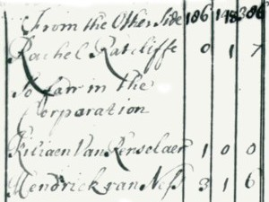

|
by Stefan Bielinski Rachel Van Valkenburgh was born during the 1650s. She was the daughter of New Amsterdam and Beverwyck pioneers Lambert and Anna Van Valkenburgh. The daughter of the night watchman, Rachel did well to marry a garrison soldier named John Radcliff. Initially, they moved in with Rachel's parents on the South Side of Albany. Later, that property at the intersection of Green and Beaver Streets was deeded to them by the Van Valkenburghs. By the 1680s, these Radcliffs were raising a family that ultimately included eleven children who were baptized in the Albany Dutch church where both parents were members. Rachel Radcliff remained a visible part of the Albany congregation for the remainder of her life. By the 1690s, John Radcliff was settled in Albany and had been appointed city porter and watchman. These allotments were welcome supplements to his soldier's salary. He frequently was absent from home leaving Rachel in charge of their growing family which in 1697 included seven children. By 1710, he had disappeared from the community record - although Rachel was not called "widow" until many years had passed. Rachel Radcliff lived until mid-century. As six of her sons and daughters married and settled locally, she became the matriarch of a large Albany family. She was able to retain her husband's posts as watchman and cryer (bell ringer) and also derived income from washing and repairing clothes and linen. By the 1730s, she would have passed her seventieth birthday. Perhaps her family did the actual walking and watching! Nearing ninety, Rachel Van Valkenburgh Radcliff died in April 1749. She was buried in the Dutch church cemetery near her Southside home. By that time, her children and grandchildren were mainline members of Albany's production and service economies. As time passed, the Radcliffs became Radleys and spread into the Albany hinterland and beyond.
Church connection: By the mid-1730s, she had witnessed more than a dozen baptisms - chiefly those of her grandchildren. She also was called on to provide funeral services ranging from digging graves to hosting funerals in her house. As time passed, her children probably did the actual digging but her home near the cemetery would be a convenient location for mourners to congregate. Southside: A term used to describe a "back street" neighborhood in old Albany. Centering roughly on the intersection of Beaver and Green Streets, by the early 1700s it was the home to a number of soldier families including these
Radcliffs. More generally, it was bounded by Pearl Street on the east, the stockade line on the south, Court Street, and the houses south of State Street. The Albany Gazette also referred to the area as "Cheapside." |